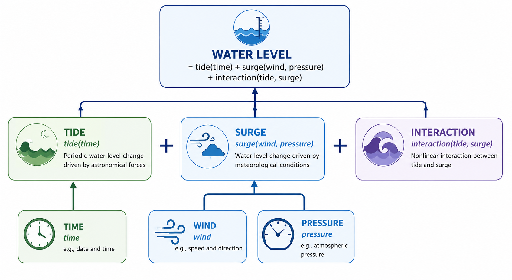
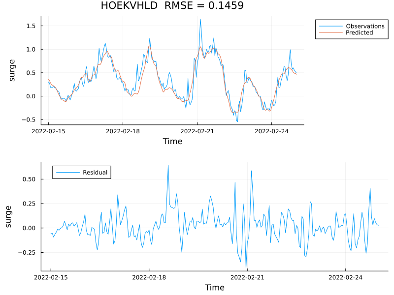
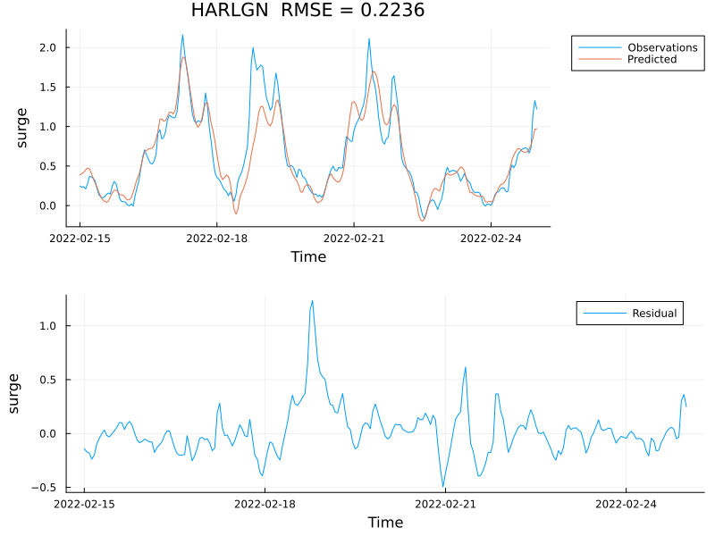
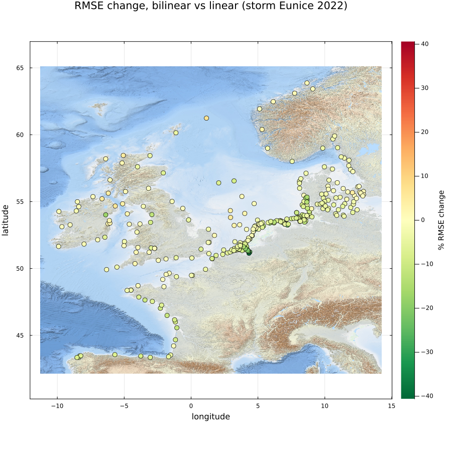
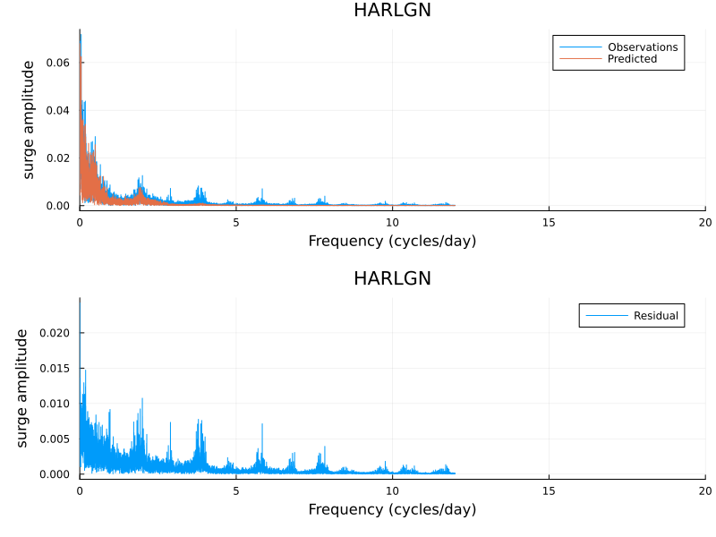
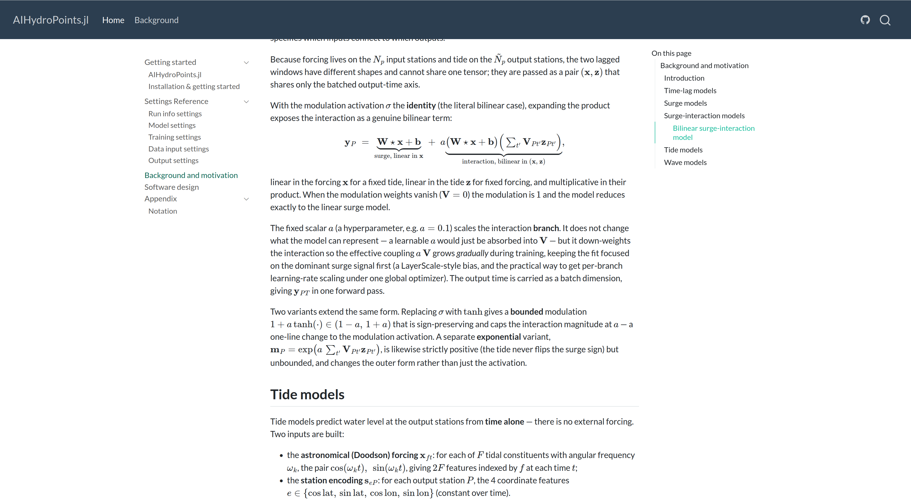
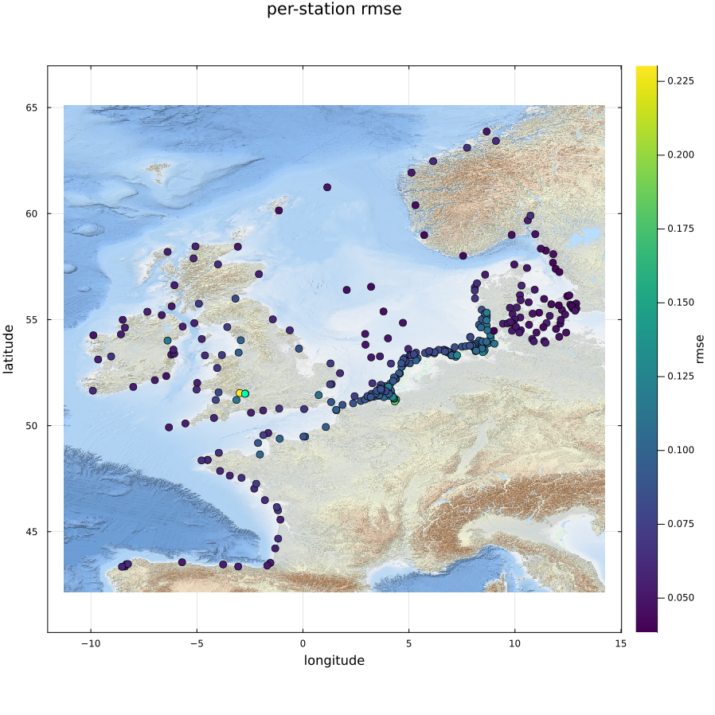
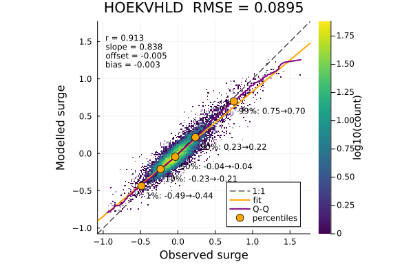

AIHydroPoints — Development Update
progress since the project overview
2026-07-30
Outline
- AIHydroPoints goals
- Models — development of tide-surge interaction models
- Training — sweeps, scaling to 317 stations
- Code improvements — refactor, TOML format, bug fixes
- New functionality — TOML-driven output, visualization
AIHydroPoints goals
Fast, accurate and reliable ML water-level forecasts
What: tide + surge + interaction, at many locations in a single model
How: trained on DCSM-FM reanalysis + ERA5 forcing; one shared model architecture; TOML-configured — train and forecast without writing code
Bar: cheaper than running the full numerical model; production-grade code and model quality — version control, unit tests, continuous smoke-testing
Recap
Since the project overview on 28 May 2026 (~2 months ago):

- Tide and surge baselines established (1 yr / 5 yr / 20 yr)
- Model hierarchy (
AbstractFluxModel) in place across all four components - Baselines back then: harmonic analysis for tides,
LinearSurgeModelfor surge — interaction wasn’t working yet
Models — revisiting the physics-based split
Two of the three pieces from the recap diagram you’ve already seen — today’s news is the third.
Linear surge benchmark (the baseline used throughout)
\[s = W_s[\tau_x, \tau_y, p] + b\]
Dense, all-to-all fit of wind stress + pressure → surge at every output station.
New: bilinear surge-interaction model
Multiply the linear surge by a tide-driven correction:
\[y = s \cdot \big(1 + a\,\sigma(V h)\big)\]
- \(s\) — the linear surge above
- \(h\) — the (lagged) tide at that station
- \(V\) — a per-station tide weight; \(a\) — a small fixed scale (e.g. 0.5)
- \(V\) starts at zero → the model starts out exactly the linear surge model, then learns the tidal correction from there
- Expanding: \(y = s + a\,s\,(Vh)\) — linear in the forcing and linear in the tide separately, but their product makes it genuinely nonlinear
Surge-interaction — storm result
Comparing BiLinearSurgeInteractionModel against the matching LinearSurgeModel (same nlags = 48, same training settings), storm Eunice 2022:
Hoek van Holland (open coast)
RMSE: 0.149 → 0.146 (−2.2%)

Harlingen (shallow Wadden Sea)
RMSE: 0.260 → 0.224 (−14.1%)

- RMSE shown as linear → bilinear, both
nlags=48 - All 317 stations, mean RMSE: testing −3.2%, storm Eunice −6.7%
- Confirms the earlier finding: interaction gain concentrates in shallow water (Harlingen), much smaller on the open coast (Hoek van Holland)
Surge-interaction — where does it help?
RMSE change per station, bilinear vs. linear (nlags=48, storm Eunice 2022; negative = improvement):

Greenest cluster sits right on the Dutch/German Wadden coast — the shallow estuaries where tide–surge coupling is strongest. One outlier station (Norwegian coast) regresses slightly.
Surge-interaction — not fully there yet
Harlingen, testing period — residual (observed − predicted) spectrum still has peaks:

- Peaks at 2, 4, 6, 8 cycles/day — exactly the tidal overtides (M2, M4, M6, M8)
- The bilinear model only captures part of the tide–surge coupling; higher-order nonlinear terms remain unmodelled
- The same station with the biggest gain (previous slide) still has the clearest leftover signal
Training
- Hyperparameter sweeps (ongoing) —
scripts/parameter_sweep.jl - Scaling to the full 317-station dataset
Example: lag-window sweep (BiLinearSurgeInteractionModel, 317 stations, 5 yr)
| nlags (h) | RMSE testing (m) | Δ testing | RMSE storm Eunice (m) | Δ storm |
|---|---|---|---|---|
| 12 | 0.094 | +5.5% | 0.166 | +8.7% |
| 16 (baseline) | 0.089 | — | 0.153 | — |
| 24 | 0.083 | −6.8% | 0.138 | −10.0% |
| 48 | 0.080 | −9.7% | 0.137 | −10.3% |
- Weight decay: light L2 (
5e-5) helps a little; more (5e-4,1e-3) clearly hurts — now the default - Learning-rate decay: mild decay (
factor=0.5) beats aggressive decay, and edges out our current0.2— worth revisiting - Batch size sweep still running
Longer lag windows keep helping up to 48h.
Code improvements
Goal: configure and run any model family the same way — swap the model, not the training script
AbstractModel
└─ AbstractFluxModel
├─ AbstractTideModel → Product / DeepONet
└─ AbstractSurgeModel → Linear / Conv / Attention
└─ AbstractSurgeInteractionModel → BiLinear- Locked-down TOML schema — breaking changes now versioned (
format_version), bad configs caught at load time instead of failing mid-run - Single training routine replacing per-model scripts
- Documentation
Bug fixes
- Training knobs lost in the refactor, restored: early stopping, weight decay, input noise
- Learning-rate decay regression (accidentally omitted, restored)
- Windows compatibility (pixi win64, script robustness)
Documentation — background.md
The model derivations (e.g. the bilinear surge-interaction expansion from earlier) now live in a rendered docs site, not just source comments:

New functionality — TOML-driven
Cleaned up TOML input files:
format_version = 2
[model_settings]
model_name = "LinearSurgeModel"
nlags = 48
[train_settings]
nepochs = 50
batch_size = 64
learning_rate = 1.0e-3
lr_decay_factor = 0.2
lr_decay_epochs = 10
early_stopping_epochs = 25
weight_decay = 5.0e-5
[data_settings.model_io]
input = ["stress_x", "stress_y", "pressure"]
target = ["surge"]
[[data_settings.files]]
path = "surge_schureman_..._317stations.jld2"
split = "training"
variables = [{name = "values", as = "surge"}]
[[data_settings.files]]
path = "era5_..._wind_stress_x.jld2"
split = "training"
variables = [{name = "values", as = "stress_x"}]
[output_settings]
write_summary = true
series_format = "netcdf"
[[output_settings.outputs]]
split = "testing"
plot_stats = true
plot_scatter = trueNew functionality — visualization
BiLinearSurgeInteractionModel, nlags=48, testing split (317 stations):
Per-station RMSE map

Scatter — Hoek van Holland

What’s next
- Complete hyper-parameter sweeps and training for North Sea
- Lake training
- Training world-wide GTSM surrogate (FUTURA)
- Online demo of North Sea model (format TBD)
- Storage for new and larger datasets